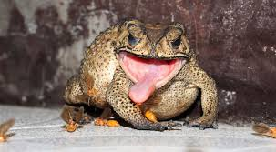
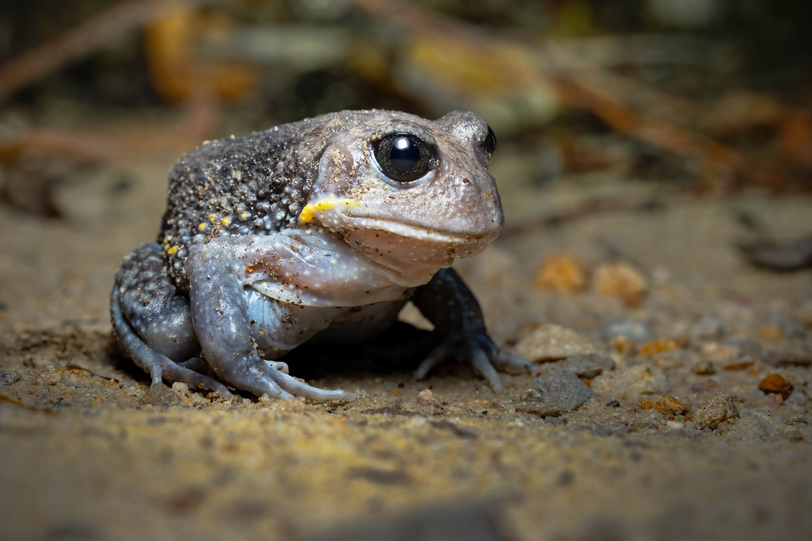
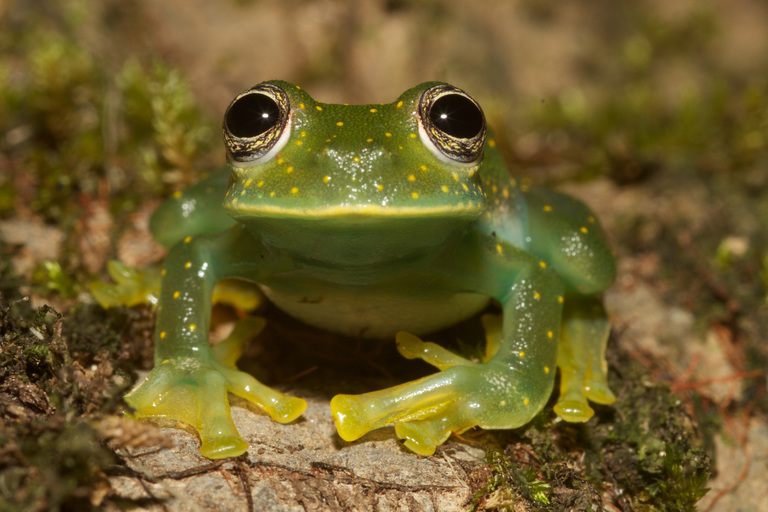
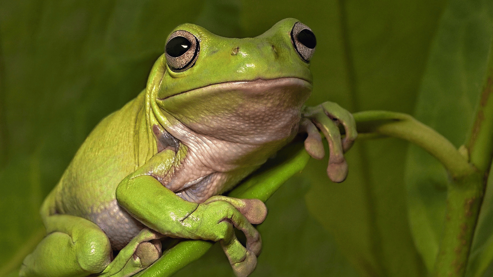

Hi I'm Arnold and I am the software developer of DIY Chemistry, if there are any problems with the website I am the one that fixes them. In my free time I really like to game and spend time with my family.


Hi I'm Suzie I am the creator behind DIY Chemistry. I'm a teacher and I like to find experiments I can do with my students. My favorite color is blue.
Hi I am Karel I am part of the managment I manage the website with Arnold. I'm a sucker for strawberry popsickles and I really like to surf in my freetime.


Hi I'm Dexter I am a creative freelancer. Together with Suzie I make sure that new experiments pop up on the website. I am her husband and we like to be creative in our freetime developing new science projects!